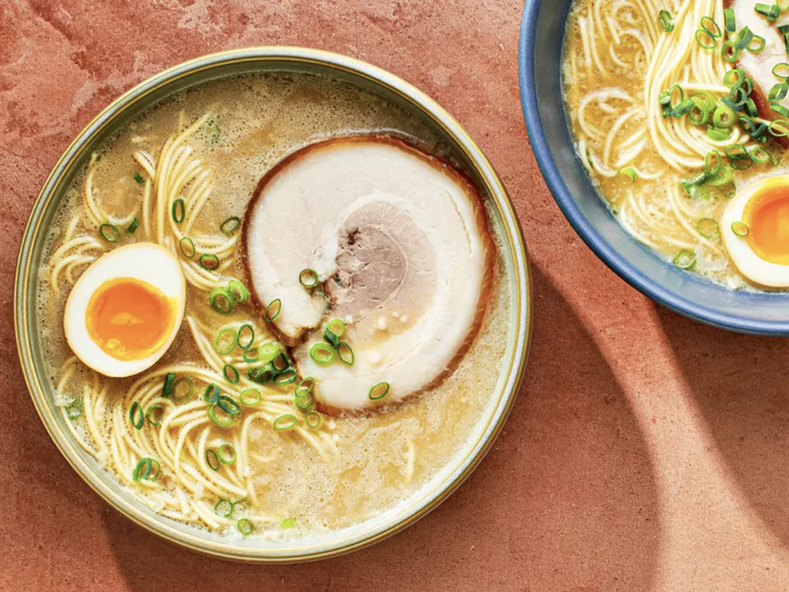

This recipe details how to make a "Rich and Creamy Tonkotsu Ramen Broth", from the website "serious eats". I love
making ramen, so I can't wait to try this out!

Ingredients
- 3 Pounds of Pig Trotters
- 2 Pounds Chicken Backs and Carcasses
- 1 Large Onion
- 12 Garlic Cloves
- 1 Knob Ginger
- 2 Whole Leeks
- 2 Dozen Scallions
- 6 Ounces Whole Mushrooms
- 1 Pound Slab Pork Fat Back
Go Back to Homepage